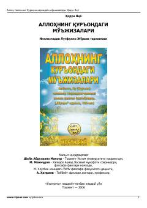

AQQur'on oyatlaridagi ilmiy mo'jizalarni zamonaviy fan nuqtai nazaridan tahlil etadi.
Bu kitob Horun Yahyo tomonidan yozilgan bo'lib, Qur'oni Karimda 14 asr oldin zikr qilingan ilmiy dalillar va tarixiy hodisalarning faqat zamonaviy fan-texnika taraqqiyoti tufayli kashf etilayotganligini bayon etadi. Asar ingliz tilidan o'zbek tiliga tarjima qilingan va Toshkentda 2006-yilda nashr etilgan. Kitobda shuningdek evolyutsiya nazariyasining asossizligi ham muhokama qilinadi.